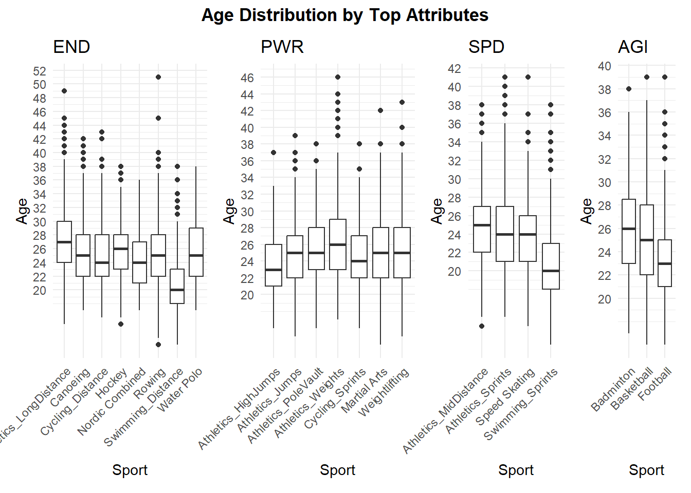
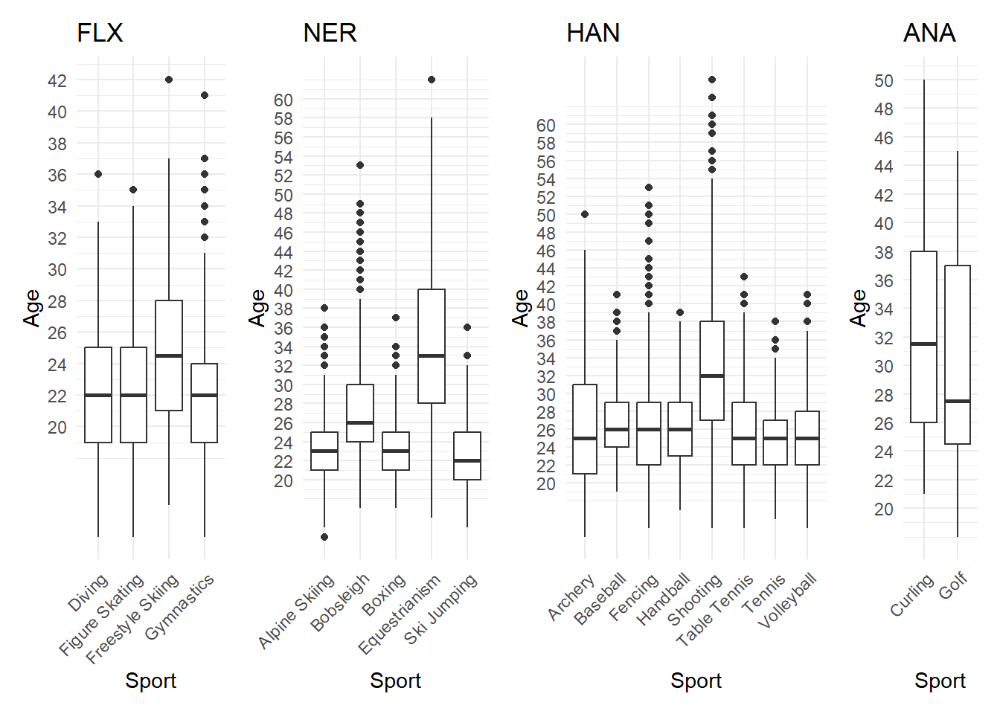
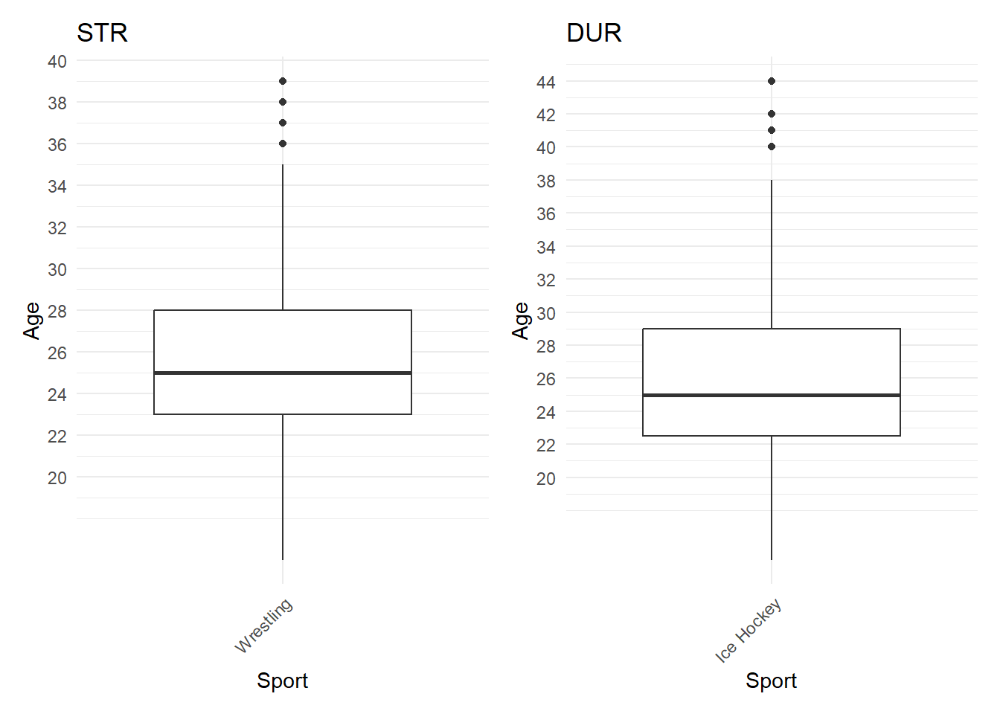

| Primary_Attribute | Attribute_Full | Average_Age_years |
|---|---|---|
| ANA | Analytic Aptitude | 32 |
| HAN | Hand-eye Coordination | 28 |
| DUR | Durability | 26 |
| NER | Nerve | 26 |
| STR | Strength | 26 |
| END | Endurance | 25 |
| PWR | Power | 25 |
| AGI | Agility | 24 |
| SPD | Speed | 23 |
| FLX | Flexibility | 22 |
Executive Summary
This report analyses the relationship between the peak and average ages of Olympic athletes across various sports, categorised by primary attributes like flexibility, endurance, analytic aptitude and more. Using data from ESPN’s toughest sports rankings and Olympic data spanning 1948 to 2016, the findings reveal how these attributes influence athletes’ career longevity. Specifically, sports relying on flexibility tend to see peak performances in athletes in their early 20s, whereas sports requiring strong analytic aptitude have athletes peaking closer to their 30s. These insights are valuable for optimising training strategies and athlete development programs for both aspiring Olympians and sports stakeholders.
Introduction
The Olympic Games highlight athletes’ peak physical and mental performances across various disciplines. This report examines patterns in the peak and average ages of Olympians, exploring how attributes like flexibility, nerve, endurance, and analytic aptitude shape these trends. Understanding these patterns can help refine coaching strategies, optimise training programs, and extend athletes’ careers. Grouping sports by their primary attributes offers new insights into how both physical and mental demands influence career trajectories.
The age at which athletes peak varies greatly depending on the sport and its required attributes. This knowledge is valuable for aspiring Olympians and those guiding athletes, helping them identify when to begin focused training and prepare for competition. It also aids coaches and trainers in designing more effective regimens, ensuring athletes reach their full potential at the optimal time.
Methods
The analysis combines two datasets:
ESPN Toughest Sports: This dataset ranks 60 sports across 10 skill categories: endurance (END), strength (STR), power (PWR), speed (SPD), agility (AGI), flexibility (FLX), nerve (NER), durability (DUR), hand-eye coordination (HAN), analytic aptitude (ANA). Each category reflects the unique demands placed on athletes in their respective sports, allowing for a comprehensive understanding of how these attributes correlate with age.
Olympic Data: This dataset is collected from Kaggle, from user Bhanupratap Biswas, includes information on every athlete who competed in the Olympics from the 1896 edition to the 2016 edition summer and winter. The analysis focuses on data from 1948-2016 to align with the era of the modern olympics games.
Data Processing Steps: Read raw dataset; cleaning symbols, unused variable, name manipulation; join the two data; plotting.
Note: Complete data dictionary is available in Appendix A, involving all variables.
Results and Analysis
The way we want to extract information in this report is by using two plots, one for the overall average age of each sports attrbute and following by showing the boxplot to see the distribution of each sport category faceted by sport attribute, we will analyse the trend and dig deeper into some sports category with interesting pattern.
Table 1 shows the average age of athletes per sports’ primary attribute. Sports requiring Flexibilty tend to have participant of the averaging at the early 20s, while those requiring Analytical Aptitude, reached 32 years old.
In order to get more insight, boxplot is choosen due to its ability to contain information such as Median, Average, Inter quartile range, and outliers. These features allows us to see the Peak Age and Career longevity of each sports.



The analysis further reveals that sports relying on endurance and nerve also see higher average ages, indicating longer careers for athletes in these disciplines.
Athletics, even though categorised as one by the olympic body (IOC), in reality has different primary attribute demands according to the events. For example, Athletics_LongDistance in Figure 1 that includes sport disciplines of more than 3.000 m distance requires endurance the most, in contrast to majority of other athletics category require power the most.
Looking at each primary attribute categories, interestingly, Shooting and Equestrianism on Figure 2 has the age distribution much older than its friend in the same category, reaching 30s. This means that to become an athlete of the
Sports that primarily rely on Analytics skill, tend to have longer career span, of more than 10 years. This number is way above average of 4-5 years in other categories (seen on three figures), excluding sports with main attribute of Handling.
Conclusion
The analysis reveals distinct age patterns among Olympic athletes, with younger athletes excelling in flexibility-driven sports and older athletes performing better in analytical and nerve-based disciplines. By examining data from the ESPN Toughest Sports rankings and Olympic data from 1948 to 2016, we can appreciate the diverse demands of different sports and the unique career trajectories of Olympic athletes. The analysis of peak and average ages further highlights how the primary attributes required for success—such as flexibility, nerve, and analytic aptitude—shape these patterns, with younger athletes dominating flexibility-based sports and older athletes excelling in more mentally demanding disciplines.
These insights underscore the need for tailored training programs that align with athletes’ physiological development and the specific demands of their sports, thereby enhancing performance and extending athletic careers. By recognizing these patterns, coaches, trainers, and other stakeholders in the sports community can better support athletes’ development, ensuring that they reach their full potential at the right time. Career longevity is also an important consideration when selecting which sports to pursue, and understanding these patterns helps optimize training strategies and career planning for all involved in an athlete’s journey.
References
ESPN. (2021). Degree of difficulty: Ranking the toughest sports. ESPN. Retrieved from https://www.espn.com/espn/page2/sportSkills
De Bosscher, V., Descheemaeker, K., & Shibli, S. (2023). Starting and specialisation ages of elite athletes across Olympic sports: An international cross-sectional study. European Journal of Sport Sciences. https://doi.org/10.24018/ejsport.2023.2.5.100
Longo, A. F., Siffredi, C. R., Cardey, M. L., Aquilino, G. D., & Lentini, N. A. (2020). Age of peak performance in Olympic sports: A comparative research among disciplines. Journal of Sports Sciences, 11(1), 141-152. https://doi.org/10.14198/jhse.2016.111.03